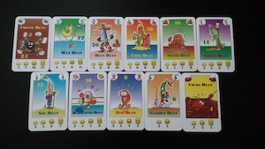

Professional Scrum Master I (PSM I)
Scrum.org certification demonstrating knowledge of Scrum roles, events, artifacts and empirical product development.
I design and ship data-driven, AI-powered web experiences — and I care about clean code as much as clean UX.
I'm a data-oriented Software Developer at the University of Ottawa (Faculty of Medicine) and a generative AI analyst based in Ottawa, Canada. I work on Elentra ME, a CRM-style medical education platform used across global institutions, and build AI-assisted tools and automation for businesses like Euroshine.
My background combines a BSc in Computer Science & Business Management with hands-on full-stack experience in PHP/Laravel, React, Vue.js, JavaScript and SQL/MariaDB. Recently I've been focused on automating repetitive workflows, designing on-site AI agents, and turning messy data into reliable, actionable systems.
Software Developer with the Faculty of Medicine, working on Elentra ME for the
University of Ottawa’s MD program and the UGME Admissions website. I maintain and
extend full-stack features for learner, curriculum and assessment data, and support
admissions workflows end-to-end.
I design and optimize SQL queries, handle data integrity and legacy data
cleanup, and coordinate deployments across environments. Tech stack
includes Laravel/PHP, Vue.js, React, JavaScript, HTML/CSS and MariaDB.
I also led the UO Elentra ME mobile app rebrand and rollout
and act as a point person for data-related issues and internal training.
Lead ongoing rebuild of Euroshine’s website and data-tracking stack using
WordPress, PHP, SASS, CSS and JavaScript to improve performance,
security and UX for both new and returning customers.
Manage customer and lead data for targeted marketing campaigns, including
segmentation, cleanup and performance tracking. Build on-site automations
and AI assistants to handle repetitive customer inquiries and internal
workflows, and work on SEO and Google Ads optimization to improve lead
quality.
Developed and optimized uOttawa.ca web services on Drupal (7–9), SASS,
CSS, JavaScript, PHP and Laravel. Worked on module maintenance, bug fixes,
performance improvements and new features across multiple sub-sites.
Led monthly training sessions for campus webmasters and produced
step-by-step guides for content creators, with a focus on accessibility
(AODA), correct data/content entry and consistent use of centralized web
systems.
Rebuilt and maintained the company website using WordPress, integrating
required plugins and custom styling.
Programmed and configured arcade machine systems according to company
requirements, fixed hardware/software issues and performed regular
maintenance to keep machines operational.
Part of the team operating arcade attractions and assisting guests on site. Supported summer camps and outdoor festivals, ensuring games ran smoothly and visitors had a safe experience.
Neural information retrieval system that computes semantic similarity between live X (Twitter) data and user queries. Uses TF-IDF, cosine similarity and query expansion to surface relevant posts in real time.
Dynamic chat platform where users are matched anonymously based on interest tags, backed by a managed database and real-time messaging on AWS.
Poker game powered by a classifier trained on historical play data. The AI chooses moves based on learned patterns, reaching over 98% accuracy on the test set.

C++ implementation of the Bonanza card game, handling all rules and edge cases with a focus on clean object-oriented design and robust error handling.
Dynamic web app on the Java EE platform where users can rate restaurants. Runs on Apache Tomcat with a PostgreSQL backend and custom HTML/CSS front-end.
Route-finding system for the Paris subway that computes the most time-efficient path between stations, including distances and step-by-step directions.
BSc. Specialization in Computer Science and Business Management
Completed coursework in Data Structures and Algorithms, Information Retrieval, Artificial Intelligence, Operating Systems, Software Engineering, and Data Science. Business courses included Marketing, Financial Accounting, Cross-Cultural Management and International Business. Graduated in June 2021.
Scrum.org certification demonstrating knowledge of Scrum roles, events, artifacts and empirical product development.
Scrum.org certification focused on applying Scrum within a development team, including engineering practices and incremental delivery.
Outskill program covering AI workflows, product strategy, implementation, workflow automation and responsible deployment of generative AI.
Ongoing coursework in machine learning and deep learning, including neural networks and practical ML workflows (in progress).
Certification focused on core Java, problem solving, abstraction, unit testing and debugging practices.
Supported student teams during uOttawa’s hackathon (2020–2021), answering technical questions, unblocking issues and helping them polish submissions.